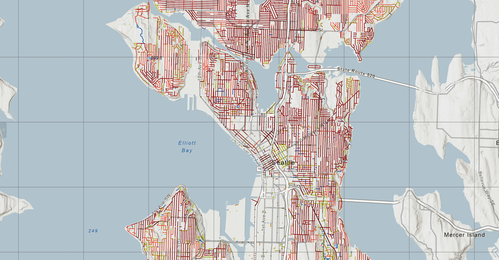

JUAN
SEBASTIAN
CORTES
/ Geospatial Data Science · Modeling & Analysis
/ Graduate Intern Candidate — NLR GDS
/ USC Spatial Sciences Institute · M.S. GIST
/ Graduate Intern Candidate — NLR GDS
/ USC Spatial Sciences Institute · M.S. GIST
Candidate Presentation · 15 min
NLR
Geospatial
Data Science
Geospatial
Data Science
National Renewable Energy Laboratory
Strategic Energy Analysis Center
Strategic Energy Analysis Center
01 · Background
0:00 – 1:15
SPATIAL
DATA
SCIENCE
DATA
SCIENCE
Feb 2021 – Nov 2022 · WSP
Design Architect
Bogota Metro Line 1 — station placement & infrastructure planning
Space, infrastructure, and the people who depend on it.
Space, infrastructure, and the people who depend on it.
2025 · Las Flores Water Company
ML Pipeline — Post-Disaster Triage
Built FieldSight: PyTorch image classifiers + Survey123 integration for post-wildfire infrastructure priority scoring in Altadena, CA.
USC Spatial Sciences Institute · Research
Geospatial Research & M.S. GIST
Composite indices, ML classifiers, and interactive web atlases — APCG outstanding paper & Esri best StoryMap.
APCG 2025
Tom McKnight & Joan Clemens Award
Outstanding Paper · Master’s Student
Esri 2025
Best Story Map
ArcGIS StoryMaps Student Competition
02 · Roadmap
THREE
PROJECTS
PROJECTS

A · Index
Vanishing
Clouds
Clouds
Composite geospatial index at national scale — structurally closest to what your team does with reV.

B · Tool
Seattle
Water Main
Risk Tool
Water Main
Risk Tool
Reusable, parameterized Python automation — built to run on any municipality’s data, not just Seattle’s.

C · Model
FieldSight
ML image classification pipeline — spatiotemporal, confidence-weighted, built for a real post-disaster stakeholder.
03 · Project A — Index
1:45 – 5:30
VANISHING
CLOUDS
CLOUDS
Connection to reV — Galen Maclaurin
Same composite-index problem reV solves: where does the signal say to act when each input has a different native resolution, projection, and provider?
MapBiomas
Land cover change · 1986–present · Raster
NASA FIRMS
Active fire detections · Near real-time · Points
IAvH
Paramo boundaries · Shapefiles
GBIF
Species occurrence records · Heterogeneous
• Live — vanishingclouds.xyz
37
Paramo complexes
201
Species records
40
Fire alerts
45
Urgency zones
01
Paramos — Geography & Distribution

All 37 of Colombia’s officially recognized paramo complexes displayed as interactive polygons across the three Andean cordilleras. Clicking any complex opens a detail card showing its code, district, biome, surface area, and elevation range.
360° field-view markers appear as users zoom in, revealing georeferenced photographs taken directly inside the paramo. A dynamic elevation cross-section at the bottom renders the terrain profile at the current latitude in real time.
360° field-view markers appear as users zoom in, revealing georeferenced photographs taken directly inside the paramo. A dynamic elevation cross-section at the bottom renders the terrain profile at the current latitude in real time.
37 paramo complexes
360° field-view markers
Complex detail cards
Elevation cross-section
IAvH boundaries
02
Build a Paramo — Environmental Conditions

Paramos don’t emerge at random — they require five converging conditions. This module lets users toggle each environmental layer individually and watch the map respond: high elevation (≥2,800m), cold temperatures, abundant moisture, tropical latitude, and Andean geography.
A composite Climate Match Score layer synthesizes temperature and precipitation to show where paramo-like conditions exist globally, revealing that the Colombian Andes are the only place where all factors converge at scale.
A composite Climate Match Score layer synthesizes temperature and precipitation to show where paramo-like conditions exist globally, revealing that the Colombian Andes are the only place where all factors converge at scale.
Elevation ≥2,800m
Temperature 2–10°C
Climate Match Score
Equatorial influence
Global suitability
03
Species — Biodiversity & Occurrence

A hexagonal grid shaded by species richness reveals biodiversity hotspots across Colombia’s paramos. A temporal slider animates GBIF occurrence records from Pre-1980 through to the present, showing how documentation has grown over decades.
Individual species are filterable by group (Flora/Fauna) and IUCN threat status (CR, EN, VU). Clicking any entry opens a detail card with a field photograph, taxonomy, year of first record, and geographic coordinates.
Individual species are filterable by group (Flora/Fauna) and IUCN threat status (CR, EN, VU). Clicking any entry opens a detail card with a field photograph, taxonomy, year of first record, and geographic coordinates.
201 occurrence records
GBIF API
Temporal slider
CR / EN / VU filter
Species detail cards
04
Threats — Land-Cover Change & Fire Pressure

Six threat views expose the human pressures reshaping paramo landscapes from 1986 to 2024, powered by MapBiomas Colombia annual land-cover classifications: a land-cover timeline, threat category by year, agriculture expansion by complex, urban proximity risk, total land-cover change, and fire pressure.
A curated Threats in the News panel surfaces recent journalism from AIDA, Yale Environment 360, and The Revelator — linking the spatial data directly to active legal battles over mining concessions inside constitutionally protected paramo zones.
A curated Threats in the News panel surfaces recent journalism from AIDA, Yale Environment 360, and The Revelator — linking the spatial data directly to active legal battles over mining concessions inside constitutionally protected paramo zones.
MapBiomas 1986–2024
Agriculture expansion
Urban proximity risk
NASA FIRMS fire alerts
Threats in the News
05
Urgency — Conservation Priority Index

The Urgency module synthesizes all preceding threat layers — land-cover change, fire pressure, agriculture expansion, and urban proximity — into a single composite conservation urgency index across all 45 urgency zones.
The index is designed to help researchers, policymakers, and the public quickly identify which paramo complexes face the most acute combination of threats. This is the same composite-signal problem reV solves — not any one factor, but the weighted combination across competing spatial inputs.
The index is designed to help researchers, policymakers, and the public quickly identify which paramo complexes face the most acute combination of threats. This is the same composite-signal problem reV solves — not any one factor, but the weighted combination across competing spatial inputs.
45 urgency zones
Composite index
Multi-layer weighting
Normalization pipeline
04 · Project B — Tool
5:30 – 9:15
SEATTLE
WATER
MAIN
WATER
MAIN
01
ensure_field() — Safe to Re-Run
Adding a field that already exists throws a fatal error in most geoprocessing APIs. ensure_field() checks the existing field list first.
This lets the analyst adjust weights and re-score the same dataset multiple times without having to delete and recreate the feature class. In a real utility workflow that matters a lot.
This lets the analyst adjust weights and re-score the same dataset multiple times without having to delete and recreate the feature class. In a real utility workflow that matters a lot.
def ensure_field(name, ftype): existing = [ f.name.upper() for f in arcpy.ListFields(in_fc) ] if name.upper() not in existing: arcpy.AddField_management( in_fc, name, ftype ) # Called before any cursor opens: ensure_field("PIPE_AGE", "LONG") ensure_field("DIAMETER_MM", "DOUBLE") ensure_field("SIMPLE_RISK", "DOUBLE") ensure_field("RISK_RANK", "LONG") ensure_field("TOP1PCT", "SHORT")
02
Risk Formula — Age ÷ Diameter + Unit Conversion
The formula is simple: older + smaller diameter = higher risk. The tricky part was units.
Seattle's data stores diameter in inches, but some records look like "6" and others look like "152." The diam < 200 heuristic catches it — anything under 200 is treated as inches and multiplied by 25.4. Without this, a 6mm pipe and a 6-inch pipe would score identically wrong.
Seattle's data stores diameter in inches, but some records look like "6" and others look like "152." The diam < 200 heuristic catches it — anything under 200 is treated as inches and multiplied by 25.4. Without this, a 6mm pipe and a 6-inch pipe would score identically wrong.
# Convert diameter: inches → mm if needed if diam < 200: # looks like inches diam_mm = diam * 25.4 else: # already mm diam_mm = diam # Age from installation year pipe_age = current_year - inst_year # The formula: older + smaller = higher risk if pipe_age and diam_mm > 0: tmp_risk = float(pipe_age) / diam_mm # 80yr, 6" pipe: 80 / 152.4 = 0.525 ← high # 10yr, 36" pipe: 10 / 914.4 = 0.010 ← low
03
Two-Pass Algorithm — Compute, Then Normalize & Rank
Normalization requires knowing the max risk across all segments — which means you can't normalize in the same pass where you compute it.
Pass 1: compute raw risk for every row, collect into a list.
Pass 2: sort, assign percentile ranks, normalize to 0–1, flag the top 1%.
Same pattern applies to any ranking problem in a geoprocessing tool.
Pass 1: compute raw risk for every row, collect into a list.
Pass 2: sort, assign percentile ranks, normalize to 0–1, flag the top 1%.
Same pattern applies to any ranking problem in a geoprocessing tool.
# PASS 1 — collect raw scores risk_list = [] with arcpy.da.UpdateCursor(in_fc, fields) as cur: for row in cur: tmp_risk = float(pipe_age) / diam_mm risk_list.append((oid, tmp_risk)) # PASS 2 — normalize, rank, flag top 1% max_risk = max(r for _, r in risk_list) top_cut = max(1, int(len(risk_list) * 0.01)) sorted_rl = sorted( risk_list, key=lambda x: x[1], reverse=True ) for rank, (oid, r) in enumerate(sorted_rl, start=1): rank_map[oid] = rank prob_map[oid] = r / max_risk # → 0–1 top_map[oid] = 1 if rank <= top_cut else 0
05 · Project C — Model
9:15 – 12:45
FIELD
SIGHT
SIGHT
Manual Review Bottleneck
Hundreds of photos reviewed by hand — slow and inconsistent under crisis conditions
Unstructured Photo Data
Raw images in Survey123 carry no condition data unless manually labeled
21
Sites evaluated
10
Destroyed meters
5
Auto-flagged for review

01
Categories — Four Conditions, One Photo

FieldSight classifies every field image into one of four structural condition categories — enabling automated population of data collection records without manual review.
Two separate binary PyTorch classifiers run on each submission: Meter Condition (Destroyed vs. Damaged) and Site Condition (Ruins/Debris vs. Cleared). Running them independently lets each model specialize and makes confidence thresholds easier to interpret.
Two separate binary PyTorch classifiers run on each submission: Meter Condition (Destroyed vs. Damaged) and Site Condition (Ruins/Debris vs. Cleared). Running them independently lets each model specialize and makes confidence thresholds easier to interpret.
Burned — 10 sites
Missing — 0 sites
Debris — 9 sites
Not Burned — 12 sites
Two binary classifiers
02
Pipeline — Six-Stage GPS Photo → Priority Score

01
Field Collection
~60 GPS-tagged photos captured via Survey123
02
Data Preparation
QGIS · GPS correction, parcel join, spatial alignment
03
Manual Labeling
~20 expert ground-truth labels for model training
04
Model Training
Two binary PyTorch classifiers: meter condition + site condition
05
Priority Scoring
Confidence metrics combined into PriorityScore · uncertain cases flagged
06
Dashboard
Predictions joined to feature class · displayed in Streamlit
03
Results — Priority Rankings & Model Design

All 21 evaluated sites ranked by combined confidence score. Sites with a destroyed meter receive the highest priority for crew dispatch.
The critical design decision: low-confidence predictions are automatically surfaced for human review rather than silently passed to the dispatch queue. Only ~20 ground-truth examples to train on — the tradeoff between automation and human review is the real engineering judgment in the pipeline.
This pattern — model assists, human decides — makes the tool deployable in crisis conditions where misclassification has real consequences.
The critical design decision: low-confidence predictions are automatically surfaced for human review rather than silently passed to the dispatch queue. Only ~20 ground-truth examples to train on — the tradeoff between automation and human review is the real engineering judgment in the pipeline.
This pattern — model assists, human decides — makes the tool deployable in crisis conditions where misclassification has real consequences.
Connection to NLR — Katy Schneider
Binary classifiers on field photos = object-based image analysis. Same pattern-recognition challenge as rooftop PV detection from satellite imagery.
Destroyed: 10 · CLASS 0
Damaged: 11 · CLASS 1
Ruins/Debris: 9 · CLASS 0
Cleared: 12 · CLASS 1
01
find_first_existing() — Portable Path Resolution
The dashboard runs both locally (files alongside app.py) and on Streamlit Community Cloud (different directory). Hard-coded paths break one environment.
find_first_existing() checks a list of candidate paths and returns the first one that exists. Each data file gets two candidates — one for each environment — so the same code runs everywhere without config flags.
find_first_existing() checks a list of candidate paths and returns the first one that exists. Each data file gets two candidates — one for each environment — so the same code runs everywhere without config flags.
APP_DIR = Path(__file__).parent def find_first_existing(*paths): for p in paths: if Path(p).exists(): return str(p) return None # Works locally AND on Streamlit Cloud: dashboard_csv = find_first_existing( APP_DIR / "data/dashboard_data.csv", APP_DIR / "dashboard_data.csv", ) predictions_csv = find_first_existing( APP_DIR / "data/predictions_with_priority.csv", APP_DIR / "predictions_with_priority.csv", )
02
marker_color() — Encoding Two Signals in One Marker
Every site on the map gets a colored marker. The color encodes two independent signals: priority score (red / orange / green) and confidence flag (gray = needs human review).
Gray takes precedence over score color. A high-scoring but low-confidence prediction should appear uncertain on the map, not high-priority. The visual hierarchy mirrors the operational hierarchy.
Gray takes precedence over score color. A high-scoring but low-confidence prediction should appear uncertain on the map, not high-priority. The visual hierarchy mirrors the operational hierarchy.
def marker_color(row): # Low confidence overrides score color if row.get('needs_review'): return 'gray' score = row.get('priority_score', 0) if score >= 50: return 'red' elif score >= 30: return 'orange' else: return 'green' # Applied row-by-row across the dataframe: df['color'] = df.apply( marker_color, axis=1 )
03
Confidence Threshold — Surfacing Uncertainty
Only ~20 labeled training examples. At that scale, a model that never says “I don’t know” is overconfident by design.
Any prediction below the threshold goes to a separate review queue instead of the dispatch list. The threshold is configurable — the team can tighten or loosen it as the model gets more training data.
This is the most important architectural decision: model assists, human decides.
Any prediction below the threshold goes to a separate review queue instead of the dispatch list. The threshold is configurable — the team can tighten or loosen it as the model gets more training data.
This is the most important architectural decision: model assists, human decides.
# Threshold at 65% — tunable by the team CONFIDENCE_THRESHOLD = 0.65 # Flag any prediction below threshold df['needs_review'] = ( df['confidence'] < CONFIDENCE_THRESHOLD ) # Split into two separate queues dispatch = df[ ~df['needs_review'] ].sort_values('priority_score', ascending=False) review_queue = df[df['needs_review']] # Result: 5 of 21 sites flagged for review # Those 5 never reach the dispatch list
06 · Why This Role
12:45 – 14:15
AN INDEX.
A TOOL.
A MODEL.
A TOOL.
A MODEL.
Thank You
Happy to take questions